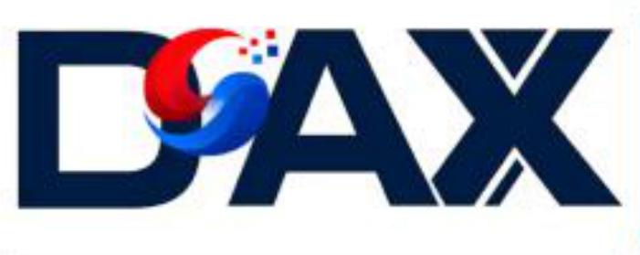
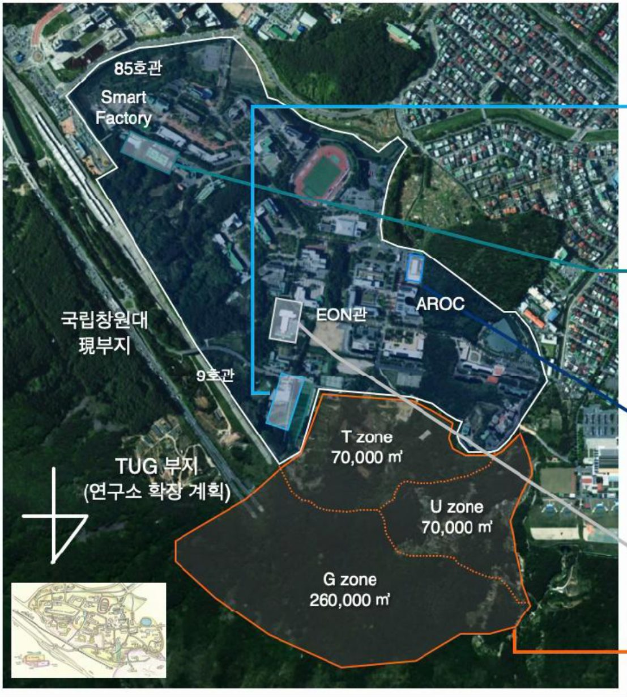

운용혁신 AX
인공지능융합공학과
방위산업 운용 분야 체계 지원 시스템
- IPS·PHM·디지털트윈 공동연구와 방산 전문 교육과정
- TUG Campus–AROC–산업단지를 잇는 실증 테스트베드
- 방산 운용 시스템의 현장 문제 해결형 공동 연구
과학기술정보통신부 · IITP AX대학원 선정 (2026–2031)
방산 운용-제조 AX 혁신인재 양성
방산을 이해하고, AI로 해결하며, 현장에서 검증하는 인재를 기릅니다. 국립창원대학교와 한화에어로스페이스가 함께 가르치고, 함께 연구하고, 함께 채용합니다.
방위산업 현장의 문제를 AI로 풀 수 있는 석·박사를 기르는 대학원 과정입니다. 일반대학원 안에 D.AX(Defense AI Transformation) 트랙을 두고, 무기체계를 운용·정비하는 쪽과 방산 제품을 만드는 쪽, 두 갈래로 나눠 가르칩니다.
운용혁신 AX
방위산업 운용 분야 체계 지원 시스템

경상남도 전략산업인 방위산업 시스템의 산학협력 인재양성 AI 전환 모델. 대학과 기업이 한 공간에서 과제를 정하고, 학생을 지도하고, 결과를 검증합니다.
제조혁신 AX
방위산업 제조 시스템 지능화 연구
최종 목표는 현장 실증형 AX 혁신 인재가 지역에 자리 잡고, 세계 무대에서도 통하게 만드는 것입니다.
D.AX 연구협력센터(TUG Campus)에서 실제 장비와 데이터로 검증합니다.
방산 도메인 지식과 AI 역량을 한 사람 안에 함께 기릅니다.
기업과 과제를 함께 수행하고, 대학 교수와 기업 전문가가 공동 지도합니다.
글로컬대학30 선정
인공지능디펜스공학과 신설
한화 3사와 동남권 인재양성 협약, 계약정원제 석사과정 합의
과기정통부·IITP AX대학원 최종 선정
2027학년도 전기 신입생 모집, 2027년 3월 첫 입학
6차년도 사업 완료, 석·박사 250명 배출
같은 AI Core 위에서 출발해, 무기체계를 쓰는 현장과 만드는 현장 중 하나를 깊이 파고듭니다.
방산시스템의 운용·정비·군수 전주기를 AI로 지능화하는 실증형 교육과정
핵심 교육목표: 방산 운용데이터 기반 AI 의사결정·운용지원 시스템 설계·통합·실증
| 지금 | D.AX 이후 |
|---|---|
| 고장 발생 후 정비 | 상태진단·고장예측 기반 선제 정비 |
| 경험 중심 운용 판단 | 운용데이터 기반 AI 의사결정 |
| 분절된 정비·군수지원 | IPS 기반 전 수명주기 지원 최적화 |
| 실제 장비 중심 시험 | 디지털트윈 기반 사전 검증·최적화 |
| 정적 기술교범 활용 | 생성형·멀티모달 AI 기반 지능형 지원 |
운용·정비·군수 과정의 병목을 찾아 AI 적용과제로 정의
문제정의서, 데이터 분석 결과데이터 가용성·품질·운용 시나리오와 성능기준 설계
진단·예지정비 AI 모델예지진단 모델, 운용 의사결정 알고리즘, 지능형 지원도구 구현
운용지원 시스템 프로토타입TUG Campus와 기업 실증환경에서 성능·신뢰성 검증
검증보고서, 현장 적용방안기대 성과: 체계 가동률 향상 · 정비시간 단축 · 군수지원 최적화 · 임무 수행 신뢰성 확보
방산 제조시스템의 설계·생산·검사·운영 전주기를 AI로 지능화하는 실증형 교육과정
핵심 교육목표: 방산 제조데이터 기반 AI 품질예측·공정최적화·지능형 제조시스템 설계
| 지금 | D.AX 이후 |
|---|---|
| 사후 불량검사 | 센서·영상 기반 실시간 품질예측 |
| 경험 중심 공정 운영 | 제조데이터 기반 AI 공정의사결정 |
| 분절된 생산·품질·설비관리 | 생산·품질·설비 데이터 통합 최적화 |
| 실제 생산라인 중심 시험 | 디지털트윈 기반 사전 검증·최적화 |
| 정적 자동화설비 활용 | Physical AI 기반 지능형 자율제조 |
생산·품질·공정·설비 과정의 병목을 찾아 AX 적용과제로 정의
제조현안 문제정의서, 데이터 분석결과공정·설비·영상 데이터의 가용성·품질과 성능기준 설계
품질예측·예지보전 AI 모델품질예측·공정최적화·로봇제어 알고리즘과 지능형 시스템 구현
지능형 제조시스템 프로토타입AROC·M.AX Factory와 기업 생산환경에서 성능·신뢰성 검증
검증보고서, 현장 적용방안기대 성과: 생산성·설비 가동률 향상 · 불량률·비가동시간 저감 · 공정 운영 최적화 · 제조 품질·신뢰성 확보
입학부터 졸업까지 여섯 단계를 거칩니다. 모든 단계가 기업 현장의 실제 문제와 이어져 있습니다.
AI 공통역량 확보
AI 기초(AI·데이터·최적화 기본이론)에서 AI 심화(최신 모델·시스템 설계·구현)까지
트랙별 도메인 심화
운용혁신AX: 무기체계 운용·정비 의사결정
제조혁신AX: 방산 제조·품질·공정 지능화
산학 수요 기반 과제 도출
기업·유관기관의 현장 애로를 찾고, 문제·데이터·목표성능·실증방안을 정리
산학공동 PBL
Project-1 문제 정의와 AI 솔루션 설계 → Project-2 구현·통합·성능개선
고신뢰 성능검증
모델 검증(정확도·강건성) → 시스템 검증(통합성·안정성) → 현장실증
성과 기반 진로
논문·특허·기술보고서로 학위를 받고, 인턴십·산학장학으로 지역 방산기업에 취업
학부 전공이 달라도 같은 자리에서 만날 수 있도록, 입학 직후 부족한 쪽을 채웁니다.
D.AX Project-1은 CS·AI 전공자와 도메인 전공자가 섞인 혼합팀으로 수행합니다.
운용혁신 중심 제조혁신 중심
| 과정 | 학점 | 졸업 성과물 | D.AX Project |
|---|---|---|---|
| 연구형 석사 | 24학점 | 석사학위논문 | Project-1 |
| 실무형 석사 | 27학점 | 연구보고서, 지식재산권 | Project-1, 2 |
| 박사 | 36학점 | 심화연구 박사학위논문 | Project-1, 2 |
| 석·박사 통합 | 60학점 | 장기 심화연구 박사학위논문 | Project-1, 2 |
모든 과정은 대학 교원과 기업 겸임교수(JA-I/R)가 함께 지도합니다. 운용혁신 트랙은 TUG Campus·IPS센터, 제조혁신 트랙은 AROC·M.AX Factory에서 결과를 검증합니다.
공부와 연구에만 몰두할 수 있게 등록금과 인건비를 지원하고, 졸업 뒤 일할 곳까지 연결합니다.
D.AX 트랙에 참여하는 대학원생에게 등록금 전액을 지원합니다.
학생인건비의 40% 이상을 사업비로 편성하고, 연구장려금·성과 인센티브·산학공동프로젝트 인건비로 나머지를 채웁니다.
한화에어로스페이스와 효성중공업, DN솔루션즈 등 창원국가산단 기업에서 채용연계형 인턴십과 현장실습을 합니다.
NVIDIA H100 GPU 서버, 디지털트윈실, 40만㎡ 규모 야외 실증단지를 연구에 씁니다.
학부 때 뽑혀 석사를 마치면 바로 입사하는 패스트트랙입니다. 매년 산학장학생 10명을 선발하고, 학·석사연계과정을 마친 5명 내외를 채용합니다. 대학과 기업은 채용 약정 협약을 맺었습니다.
지원 자격과 제출 서류는 국립창원대학교 대학원 모집요강을 따릅니다. 궁금한 점은 아래 문의처로 연락해 주세요. 학부생이라면 연구실 인턴십, 캡스톤디자인, 학부연구생으로 먼저 참여할 수도 있습니다.
기업이 문제를 내고, 대학과 함께 연구개발부터 실증과 성과까지 만듭니다. 끝난 결과는 다시 다음 과제의 출발점이 됩니다.
기업 현안과 기술 수요 조사, 시장·기술 동향 분석, 과제 후보 발굴
연구 주제와 목표 정의, 범위 설정, 과제지도(로드맵) 도출
교원·학생 연구팀 구성, 기업 전문가 멘토 매칭, 역할과 협업 체계 확정
공동 연구개발과 실험·분석, PoC·시제품 개발, 정기 교류와 진도 관리
AROC·TUG 보안 환경에서 실증, 기술·경제성·사업성 평가, 논문·특허·기술이전 검토
성과 고도화, 후속 과제·사업 연계, 인재 채용과 기술 확산
JA(Joint Appointment): 기업·연구소 전문가를 대학 겸임교원으로 임용하는 제도. 한화에어로스페이스 전문가 4명이 JA 교원으로 공동강의와 공동지도를 맡습니다.
대학이 자체 재원으로 전용공간과 AI 인프라를 마련했습니다. 강의실에서 만든 모델을 같은 캠퍼스 안 실증단지에서 바로 시험합니다.

2026–2027
12억 원
NVIDIA H100 8GPU 서버(구축 완료), 냉각·전력 인프라, Spine-leaf 네트워크
2027–2028
35억 원
DGX H100급 GPU 서버 10대 이상, 메타데이터 서버를 포함한 운영환경, 전력 증설
2028–2029
55억 원
GPU 서버 5대 추가, 엣지AI 장비, 서버 교체와 공동활용 시스템 구축
국제공동연구 25건 이상, 글로컬 인턴십, 세미나와 글로벌 AI 교류 프로그램을 운영합니다.
세 개의 연구그룹이 AI 핵심기술과 두 도메인을 나눠 맡고, 한화에어로스페이스 현장 전문가가 각 그룹에 함께합니다.
그룹장 김중락 교수 · AI 알고리즘·모델·데이터 핵심기술, AI Core 교육과 공통 플랫폼
그룹장 이석주 교수 · 운용·정비·통신 지능화, 상황인식·의사결정, Simulation·XR
한화에어로스페이스 전문가: 김남훈(IPS/MRO·PHM), 공지훈(방산 운용 혁신), 이승대(시스템설계·DT), 김현준(방산 LLM/RAG), 박상현(시스템 검증·신뢰성 AI)
그룹장 김주희 교수 · 제조 자동화, 품질 예측·검사, 설계·생산 최적화, 디지털트윈 스마트 공정
한화에어로스페이스 전문가: 박준영(방산 제조 혁신), 홍준희(지능형 검사), 박성재(제조 품질 데이터), 지현빈(엣지 디바이스)
완성년도 기준 전임교원 30명, JA 겸임교원 20명(공동연구개발기관 현장전문가 포함)으로 늘릴 계획입니다.
입학 상담, 산학 협력, 공동연구 제안 모두 환영합니다.